在做地理数据分析时，有时需要折线的直线长度，比如计算曲折度（Sinuosity = 实际长度L / 直线长度S）。本文记录了我在使用OpenStreetMap数据做分析时，计算直线长度所使用的一种方法。
数据
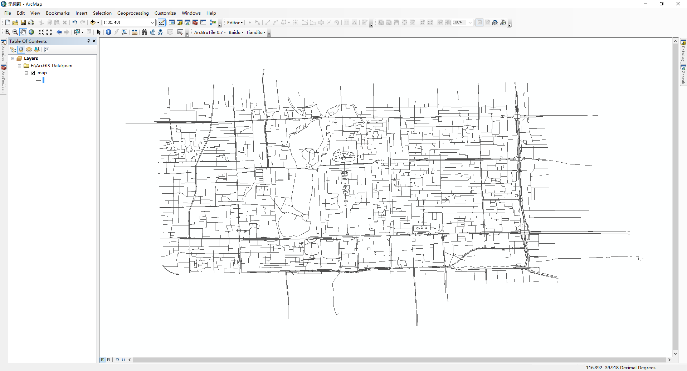
Haversine formula公式
计算直线长度，我首先想到的是，利用Haversine formula公式根据起止点的经纬度来计算距离，因为在ArcMap中可以用Calculate Geometry(如下图)计算线的起止点坐标。实际长度用 !shape.length 计算。但是在计算曲折度的时候，发现部分线的实际长度比直线长度还小。我就挑选了一条线，用测量工具测算出的距离与Haversine formula公式计算的距离不一致。
猜想原因：①直线长度和实际长度两种计算方法的原理不一致，因此导致了“实际长度比直线长度还小”的问题；②投影问题。
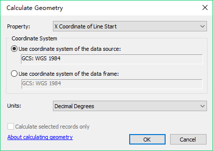
因为我比较懒，我也没去深究ArcMap中 !shape.length 的计算原理，也没去管投影问题，因为只要直线长度和实际长度的计算方法一致，就可以计算曲折度。所以，下面这种方法就诞生了。
计算过程
既然实际长度采用 !shape.length 计算，那么我把起、止点连接成直线，再用同样方法计算，就能保证两个长度的计算方法一致了。那么怎么连接起、止点呢？
使用Feature Vertices To Points工具生成起、止点(Points)
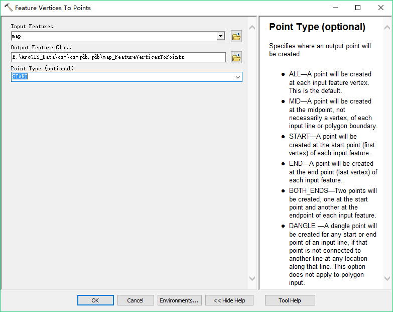
生成的起、止点图层如下图。
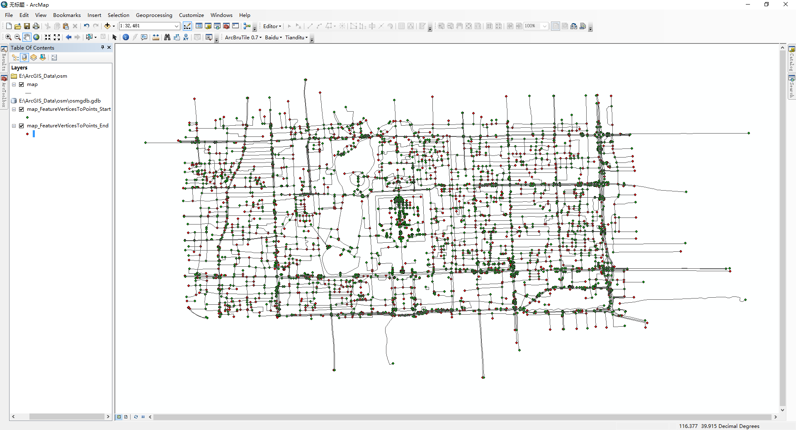
合并起、止点图层
将两个图层合并可以使用Append或者Dissolve工具。在这里，我选择Append工具，将“End”图层追加到“Start”图层。
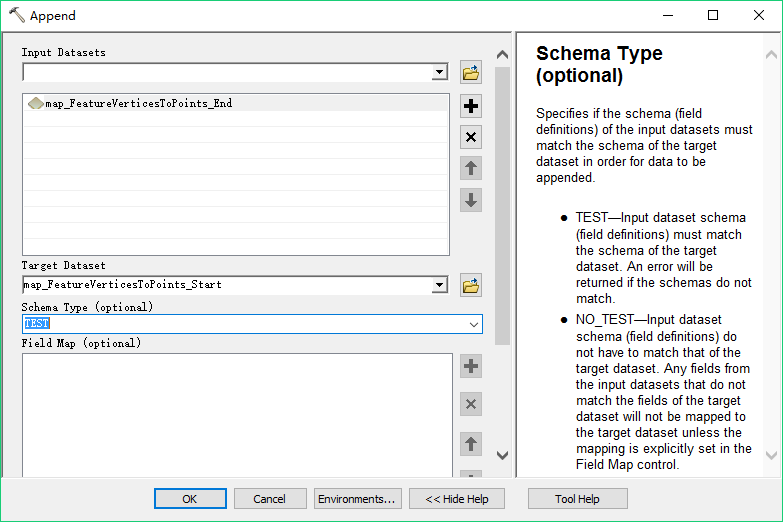
将起、止点连接成线(Points To Line)
将“End”图层追加到“Start”图层后，打开属性表，可以发现起、止点都在同一图层，并且ORIG_FID字段存在相同的值，因为他们表示同一条线的起、止点。（下图为FID=1066的线）
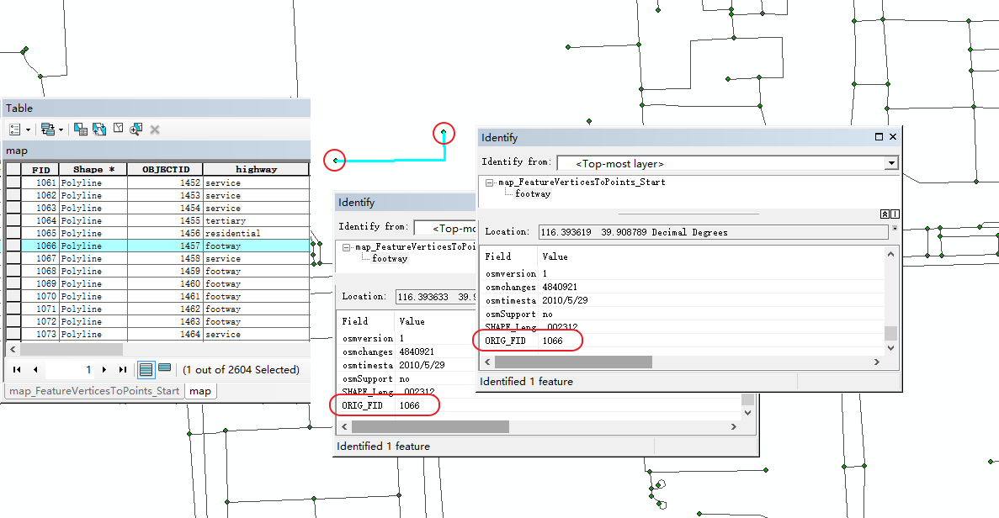
使用Point To Line工具将点转换为线，注意Line Field选择ORIG_FID。
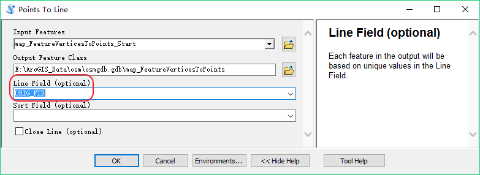
生成的结果如图。
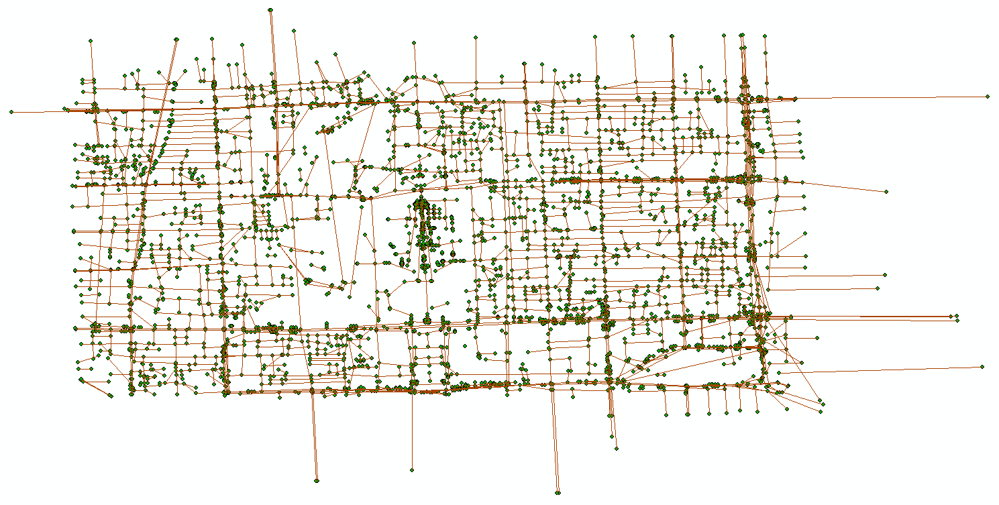
计算直线长度
打开属性表，新建字段，使用字段计算器计算长度。
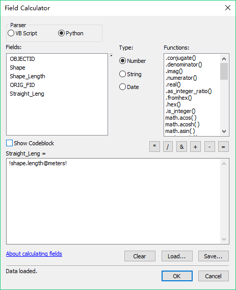
将计算结果添加到线图层属性表(Join)
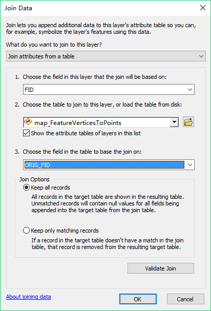
结果
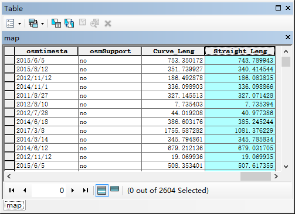